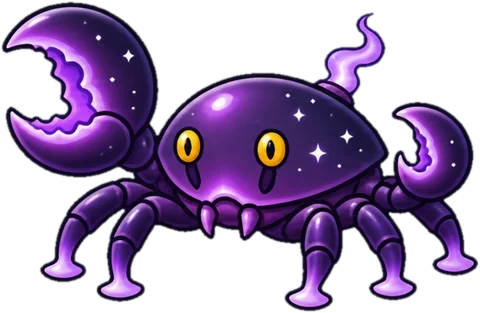

 Ghost
Ghost Electric
ElectricTap a stage to read its story.
Lunscorp is a dark purple crab with several glowing yellow eyes arranged across its carapace and two large front claws it holds raised like it is permanently ready to fight something it has not located yet. Its shell is the color of deep space, and those yellow eyes watch every direction at once - a useful ability in the haunted maintenance tunnels of Steel Fortress where it first appeared. Nobody is sure if it wandered in from outside or materialized from the ghost-energy that seeps through the old iron walls.
Field note: Lunscorp always raises both claws before it sees what startled it - its claws know before its eyes do.
Steel Fortress. Lunscorp and its family are found in the Steel Fortress. See everyone who lives there.
Share a Bond Food that matches its types to become friends. Lunscorp loves:
A Bond Food is not a trick. It joins your spirit with the Kimuro's spirit, and only when it chooses you.
Print the Kimuro adventure packs: mazes, cards, a board game and Bond Mark medals.
See the printable packs